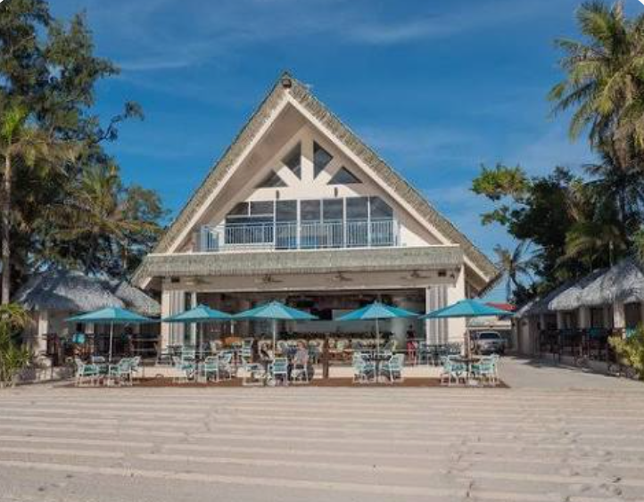

Exploring the Flavors of Saipan
Hafa Adai and welcome to paradise! Saipan isn't just known for its clear blue, breathtaking waters and white sandy beaches. It also has many great places to eat, with different foods and flavors that represent the island's culture and diversity. I want to share some of my favorite places to eat around Saipan, from local restaurants and beachside spots to some hidden gems. Whether you're looking for a refreshing drink, a good meal, or something new to try, these are some places I think you should check out during your visit to Saipan.
Must Try Saipan Eats:
- Surf Club Saipan.
- Shirley Coffee Shop
- Hermans Modern Bakery
- Himawari
- Spicy Thai Restaurant
Surf Club Saipan|Chalan Kanoa

If you're looking for a place where you can enjoy good food while taking in Saipan's beautiful island atmosphere, Surf Club Saipan is my top pick. I like the relaxing beachside setting because it gives you more than just a place to eat—it gives you a chance to enjoy the scenery and experience the island. Whether you're visiting with family or friends, Surf Club is a place I would recommend adding to your Saipan food trip.
What I love:
- fresh seafood and local dishes
- The delicious grilled food
- The beautiful beachside views
- The relaxing island atmosphere
- Enjoying a meal while looking out at the ocean